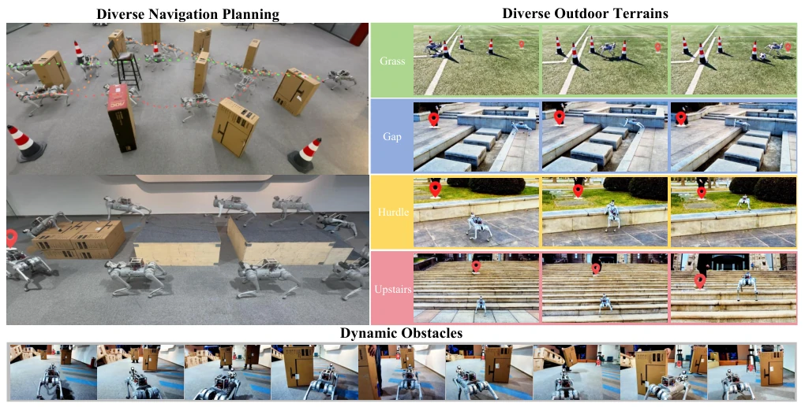
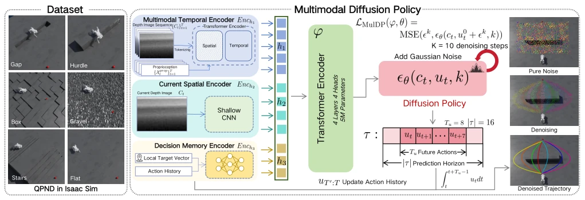
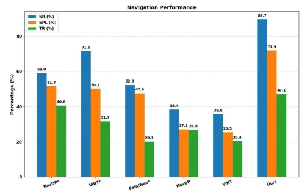
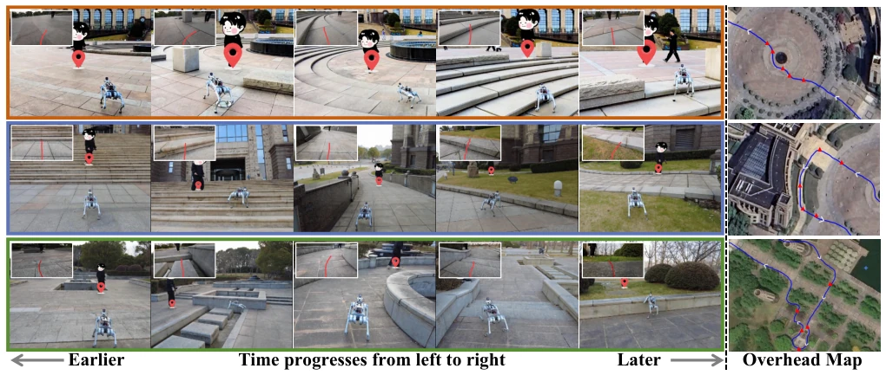
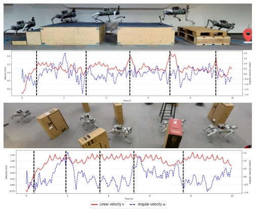
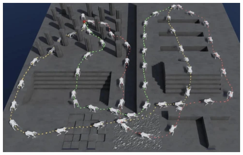
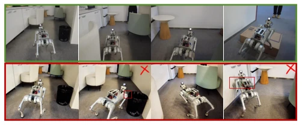

This work introduces a diffusion-based upgrade to parkour navigation for quadruped robots, attempting to address the rigidity of traditional control strategies using generative models. The core of MulDP lies in leveraging diffusion models to handle the multimodality of action distributions, overcoming the limitations of traditional methods which are either overly conservative in obstacle avoidance or fail to plan for long-horizon momentum accumulation. Although the QPND dataset was proposed to fill the void in extreme terrain data, real-world deployment still relies on UWB positioning for targets, and a pure visual end-to-end closed-loop remains a work in progress. However, achieving an 89.7% success rate on complex terrain is indeed remarkable, particularly the predictive acceleration behavior evident in the speed curves, which validates the effectiveness of perception-control coupling. This approach understands the physical essence of parkour better than mere obstacle avoidance, offering a new paradigm for autonomous decision-making by embodied intelligence in complex environments.
Existing quadruped navigation mostly relies on human intervention [6] or performs only obstacle avoidance rather than traversal. Traditional visual navigation [11] outputs waypoints, which are suitable for wheeled robots but not for quadruped parkour scenarios requiring fine speed regulation. Parkour necessitates long-horizon prediction; for instance, crossing gaps requires pre-acceleration to accumulate momentum, whereas existing methods often neglect the tight coupling between proprioception and vision, resulting in physical infeasibility. Additionally, map-based planners [7] find it difficult to precisely regulate speed in dynamic scenarios. MulDP aims to address these challenges to achieve autonomous long-horizon navigation, allowing robots to truly leverage their locomotion capabilities rather than simply avoiding obstacles, thereby filling the research gap in embodied navigation under extreme terrain conditions.

Fig. 1: Left: MulDP demonstrates diverse navigation behaviors in indoor environments with multiple feasible solutions, enabling the robot to autonomously leverage its locomotion capabilities to either traverse or circumvent obstacles. Right: MulDP exhibits robust generalization across diverse outdoor environments, enabling efficient point-goal parkour navigation. Bottom: MulDP performs real-time, safe autonomous navigation in dynamic obstacle scenarios.
The overall workflow is trained based on the QPND dataset. The architecture comprises three encoders: the Multimodal Temporal Encoder processes historical depth and proprioception to capture temporal context; the Current Spatial Encoder captures current spatial details to handle sudden obstacles; and the Decision Memory Encoder stores planning history to ensure intention continuity. After feature fusion, the data is input into a diffusion policy, generating velocity command sequences through 10 denoising steps. Training employs end-to-end supervised learning, leveraging data augmentation and noise injection to enhance Sim-to-Real generalization capabilities, ensuring the policy remains robust under real sensor noise. Specifically, the model encodes historical depth images and proprioception into unified features, combining them with current depth frames and global goal information via a Transformer. The diffusion process initializes Gaussian noise, iteratively predicts noise and updates the action sequence, ultimately outputting future velocity commands. The loss function minimizes the discrepancy between predicted and ground-truth noise, optimizing the policy to generate action trajectories that conform to physical constraints. Data collection encompasses script generation and expert teleoperation, covering diverse terrains.

Fig. 2: MulDP Architecture. Multimodal observations, including historical depth images, proprioception, the current depth frame, and goal information, are encoded and fused into a latent representation. The diffusion model conditions on this representation to iteratively generate a horizon of future velocity commands. At each 5 Hz update, only the first command in the predicted sequence is sent to the locomotion policy before the horizon is replanned.
Validated on Isaac Sim and a real Unitree Go1 robot. Compared against baselines such as NavDP* and ViNT*, MulDP achieves an 89.7% Success Rate (SR), significantly outperforming NavDP*'s 59.0%. Ablation studies demonstrate that proprioception and noise injection are crucial; removing proprioception results in a substantial decrease in success rate. Real-world 1-kilometer dynamic target following experiments demonstrate long-horizon robustness, where speed curves indicate the robot adjusts momentum according to terrain rather than simply decelerating to avoid obstacles, showcasing adaptability in dynamic environments. Evaluation metrics include SR, SPL, TR, and TTR, comprehensively measuring navigation performance. The experiments also verify the model's generalization capability on unseen terrains and obstacles, confirming the effectiveness of the QPND dataset.

Fig. 3: Comparison Experiments of MulDP.

Fig. 6: Long-distance outdoor dynamic target-following experiment. We conduct a 1-km outdoor experiment across diverse terrains. Orange box indicates traversal of a circular plaza with flat ascending and descending stairs. Blue box denotes climbing steep stairs followed by descent, grass traversal, and obstacle avoidance. Green box represents gap crossing, traversal of a circular garden, and ending with a hurdle jump. The right panel shows the overhead navigation map.

Fig. 7: Velocity of the robot equipped with MulDP. Black lines indicate the instantaneous linear and angular velocities. maintains a relatively high and stable linear velocity (average around 1.1 m/s) while adjusting angular velocity to avoid obstacles. When encountering obstacles, the angular velocity reaches local peaks while the linear velocity remains smooth. This suggests that MulDP prefers heading adjustment over abrupt deceleration, favoring dynamically consistent avoid- ance instead of conservative stop-and-turn maneuvers. Such behavior preserves motion continuity and locomotion stabil- ity, and reduces unnecessary velocity fluctuations and kinetic energy dissipation.
其他图片Other Figures

Fig. 5: Long-horizon parkour navigation in Isaac Sim.

Fig. 4: Performance comparison of MulDP and w/o DN in a narrow residential environment. Green box: MulDP successfully navigates through the narrow corridor. Red box: w/o DN model collides with obstacles during navigation.